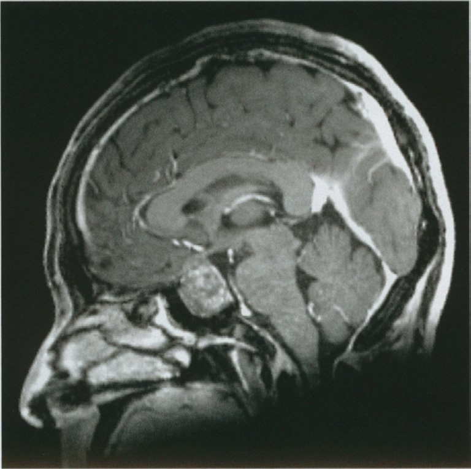
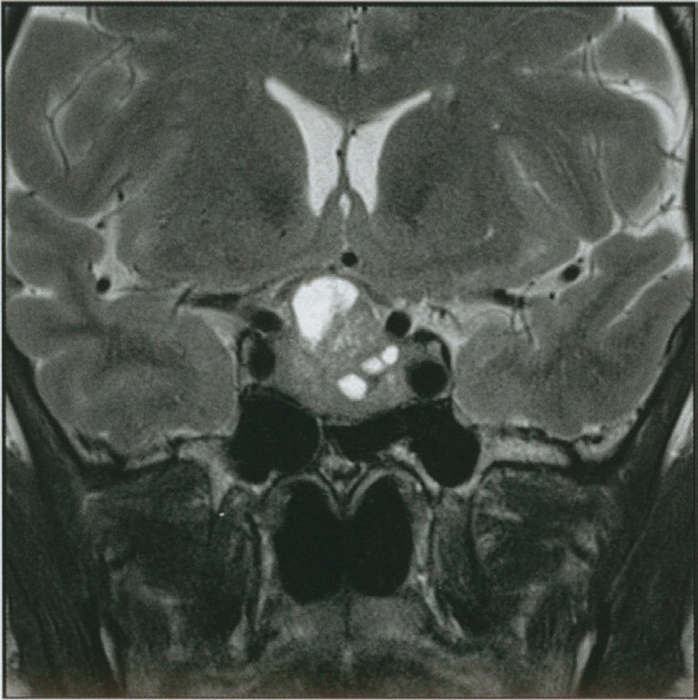
| 系統 | 主な症候 |
|---|---|
| 系統 | 主な症候 |
| 末端・顔面 | 手足・鼻・口唇・下顎の肥大、靴・指輪サイズ増大、声低音化 |
| 代謝 | 糖尿病（GHはインスリン拮抗）、高血圧 |
| 循環器 | 心肥大・心不全 |
| 神経 | 手根管症候群、睡眠時無呼吸（SAS） |
| 視野 | 両耳側半盲（腫瘍が視交叉圧迫） |
| 腫瘍リスク | 大腸癌・結腸ポリープ |
| 選択肢 | 正誤 | 関連疾患 |
|---|---|---|
| 選択肢 | 正誤 | 関連疾患 |
| ａ 異食（pica） | × | 鉄欠乏・妊娠・知的障害など |
| ｂ 過活動 | ○ | AN（神経性やせ症） |
| ｃ 被毒妄想 | × | 統合失調症 |
| ｄ 不潔恐怖 | × | 強迫性障害（OCD） |
| ｅ させられ体験 | × | 統合失調症（作為体験） |
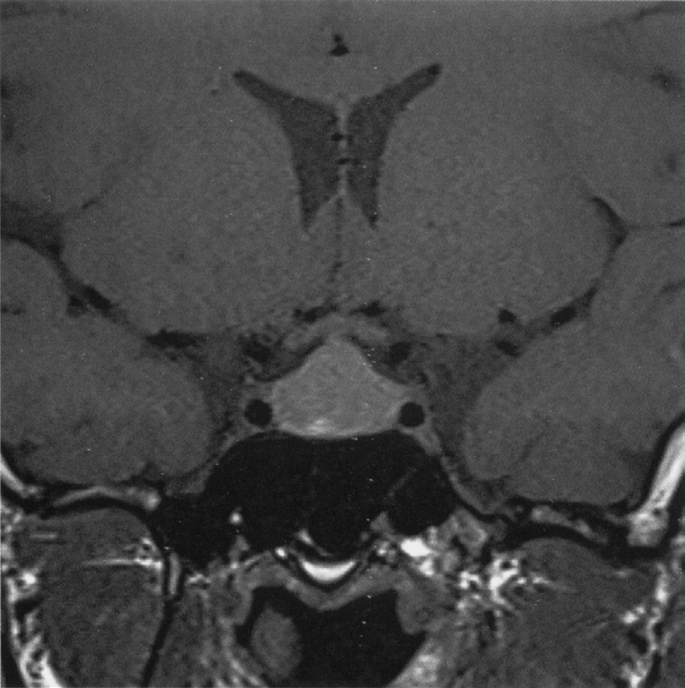
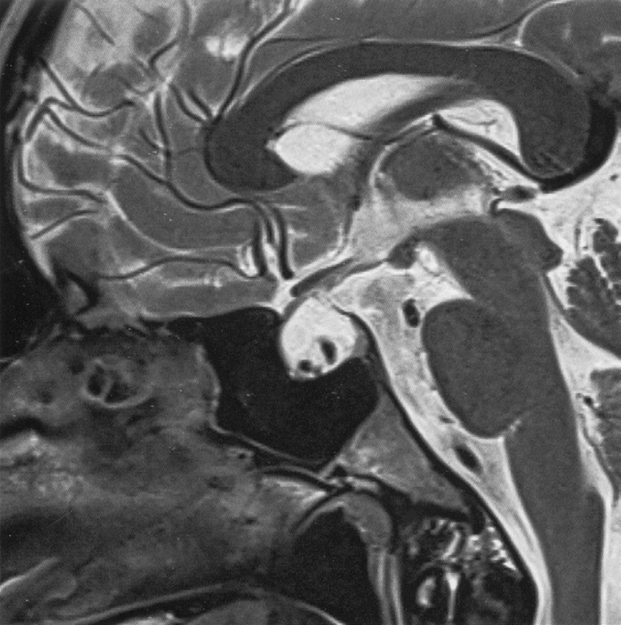
| 検査項目 | 意義 |
|---|---|
| 検査項目 | 意義 |
| GH・IGF-I | 先端巨大症の除外 |
| プロラクチン | プロラクチノーマの除外 |
| コルチゾール・ACTH | Cushing病の除外 |
| TSH・FT4 | 中枢性甲状腺機能低下の確認 |
| LH・FSH・テストステロン/エストロゲン | 性腺機能低下の確認 |
| 尿浸透圧・血清Na | 尿崩症の確認 |
| 治療 | 役割 |
|---|---|
| 治療 | 役割 |
| 栄養管理 | 体重回復が最優先（入院栄養療法） |
| 心理療法 | 認知行動療法（CBT）・家族療法 |
| 家族への支援 | 家族の巻き込みが治療の鍵 |
| 女性ホルモン投与 | 骨粗鬆症予防（骨密度低下対策）は議論あり |
| 甲状腺ホルモン投与 | 不適切（sick euthyroidは栄養回復で改善） |
| 顔貌 | 正しい疾患 | 誤り選択肢 |
|---|---|---|
| 顔貌 | 正しい疾患 | 誤り選択肢 |
| 下顎突出・眉弓突出 | a 先端巨大症 | — |
| 仮面様顔貌 | b Parkinson病 | — |
| 眼球突出 | Basedow病 | c Sheehan症候群は× |
| 眉毛外1/3脱失 | 甲状腺機能低下症 | d Cushing病は× |
| 満月様顔貌 | Cushing症候群 | e Basedow病は× |
| 項目 | AN | BN |
|---|---|---|
| 項目 | AN（神経性やせ症） | BN（神経性過食症） |
| 体重 | 低体重（BMI＜17.5） | 正常〜肥満 |
| 食行動 | 摂食制限中心 | 過食＋代償行動 |
| 代償行動 | なし（制限型）/ あり（排出型） | 自己誘発嘔吐・下剤乱用 |
| 月経 | 無月経が多い | 比較的保たれる |
| 電解質 | 比較的正常 | 代謝性アルカローシス・低K |
| 病識 | 乏しい | あり |
| 活動性 | 過活動 | 様々 |
| 薬剤分類 | 代表例 |
|---|---|
| 薬剤分類 | 代表例 |
| 抗精神病薬（D2拮抗） | ハロペリドール、リスペリドン、スルピリド |
| 制吐薬（D2拮抗） | メトクロプラミド、ドンペリドン |
| 抗うつ薬 | SSRI（軽度） |
| 降圧薬 | メチルドパ、レセルピン（旧薬） |
| 薬剤 | 作用 | プロラクチン | 用途 |
|---|---|---|---|
| 薬剤 | 作用 | プロラクチン | 用途 |
| ブロモクリプチン | D2作動 | ↓ | プロラクチノーマ・乳汁分泌抑制・パーキンソン病 |
| カベルゴリン | D2作動 | ↓ | プロラクチノーマ（第一選択） |
| スルピリド | D2拮抗 | ↑ | 制吐・精神科（催乳副作用あり） |
| メトクロプラミド | D2拮抗 | ↑ | 制吐薬（催乳副作用あり） |
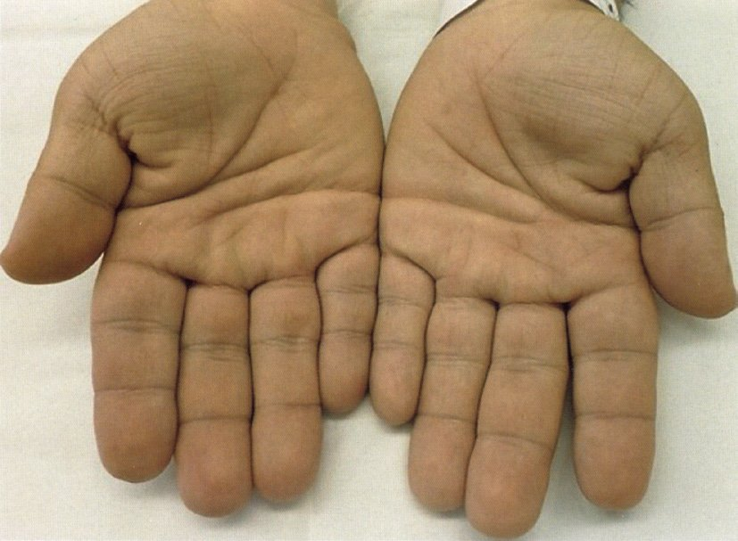
| 検査 | 目的 | 先端巨大症 |
|---|---|---|
| 検査 | 目的 | 先端巨大症 |
| IGF-I | スクリーニング | 高値 |
| 75gOGTT後GH | 確定診断 | 抑制されない（≥1ng/mL） |
| ITT | GH欠損の診断 | 不要・危険 |
| MRI | 腫瘍画像 | 下垂体大腺腫が多い |
| 副作用 | 頻度 | 主症状 | 治療 |
|---|---|---|---|
| 副作用 | 頻度 | 主症状 | 治療 |
| 下垂体炎 | 5〜10% | 倦怠感・低血糖・低Na | ステロイド＋ホルモン補充 |
| 副腎炎 | 5〜8% | 副腎不全症状 | ステロイド補充 |
| 甲状腺炎 | 10〜20%（最多） | 初期亢進→低下 | 甲状腺ホルモン補充 |
| 1型糖尿病 | 1〜2% | 劇症型DM・DKA | インスリン |
| 項目 | 変化 | 機序 |
|---|---|---|
| 項目 | 変化 | 機序 |
| ケトン体 | ↑ | 脂肪分解→β酸化→ケトン体産生 |
| 血糖 | ↓傾向（維持) | 初期は糖新生で維持 |
| 遊離脂肪酸 | ↑ | 脂肪組織の分解 |
| インスリン | ↓ | グルコース低下による |
| グルカゴン | ↑ | 血糖維持のため |
| HbA1c | 変化なし | 2〜3か月の平均を反映 |
| アルブミン | 変化なし（短期） | T1/2≒20日 |
| トリグリセリド | ↓ | 脂肪分解により消費 |
| 選択肢 | 評価 | 理由 |
|---|---|---|
| 選択肢 | 評価 | 理由 |
| 水分制限 | × | CAH発熱時に水分制限は有害 |
| 抗菌薬投与 | × | 感染の根拠があれば考慮するが初期対応ではない |
| 利尿薬静注 | × | 副腎不全に利尿薬は禁忌 |
| 糖質コルチコイド増量 | ○ | Sick day rule：2〜3倍増量 |
| GI療法 | × | 高カリウム血症がない限り不要 |
| 選択肢 | 評価 |
|---|---|
| 選択肢 | 評価 |
| 血管内治療 | ×（脳血管障害の治療；下垂体卒中ではない） |
| 減圧開頭術 | ×（全身麻酔下の開頭は侵襲大；経蝶形骨洞が優先） |
| 経蝶形骨洞手術 | ○（視交叉圧迫解除の緊急手術） |
| 開頭クリッピング術 | ×（脳動脈瘤破裂の治療） |
| 腰椎ドレナージ | ×（くも膜下出血の減圧；本疾患に適応なし） |
| 疾患 | 特徴 |
|---|---|
| 疾患 | 特徴 |
| リンパ球性下垂体炎 | 妊娠・産後の女性、均一な腫大、自己免疫 |
| プロラクチノーマ | 高プロラクチン血症、無月経・乳汁分泌 |
| 非機能性下垂体腺腫 | 視野障害先行、ホルモン異常少 |
| 頭蓋咽頭腫 | 視床下部・下垂体柄、石灰化（小児〜若年） |
| Sheehan症候群 | 分娩後大量出血→下垂体壊死（萎縮、腫大はしない） |
| サルコイドーシス | 下垂体柄肥大・尿崩症、肺・リンパ節病変を合併 |
| 検査 | 所見 | 機序 |
|---|---|---|
| 検査 | 所見 | 機序 |
| Na | 低値 | コルチゾール↓→ADH↑→水貯留 |
| 血糖 | 低値 | コルチゾール↓→糖新生↓ |
| 白血球分画 | リンパ球↑（相対） | コルチゾール↓→好中球↓ |
| K | 正常 | 中枢性→アルドステロン保たれる |
| クレアチニン | 正常 | 腎機能は通常障害されない |
| LH・FSH | 低値 | 性腺軸障害→無月経 |
| TSH | 低値 | 甲状腺軸障害 |
| ACTH・コルチゾール | 低値 | 副腎軸障害（最重要） |
| ホルモン | 変化 | 機序 |
|---|---|---|
| ホルモン | 変化 | 機序 |
| LH・FSH | ↓ | GnRHパルス抑制（CRH・コルチゾール↑による） |
| ACTH | ↑ | HPA軸活性化 |
| GH | ↑ | ストレス誘発性GH分泌 |
| プロラクチン | ↑ | ストレス反応 |
| ADH | ↑ | 血圧維持・水保持 |
| コルチゾール | ↑ | 抗炎症・糖新生 |
| インスリン | ↓ | 交感神経優位→膵β細胞抑制 |
| 疾患 | 嗅覚 | LH/FSH | 染色体 | 特徴 |
|---|---|---|---|---|
| 疾患 | 嗅覚 | LH/FSH | 染色体 | 特徴 |
| Kallmann症候群 | 低下 | 低値 | 46,XX or 46,XY | 嗅覚低下が鍵 |
| Turner症候群 | 正常 | 高値（過剰分泌） | 45,X | 低身長・翼状頸・原発無月経 |
| Klinefelter症候群 | 正常 | 高値 | 47,XXY | 男性・精巣萎縮・女性化乳房 |
| Sheehan症候群 | 正常 | 低値 | 46,XX | 分娩後大量出血歴 |
| Rokitansky症候群 | 正常 | 正常 | 46,XX | 子宮・腟形成不全 |
| 病変部位 | 視野障害 |
|---|---|
| 病変部位 | 視野障害 |
| 視交叉（正中）圧迫 | 両耳側半盲 |
| 視神経（一側） | 一側の視野全欠損（単眼盲） |
| 視索（一側） | 同名半盲 |
| 視放線 | 四半盲など |
| 所見 | 方向 | 機序 |
|---|---|---|
| 所見 | 方向 | 機序 |
| 体温 | 低下（低体温） | 基礎代謝↓ |
| 脈拍 | 低下（徐脈） | 迷走神経優位・代謝低下 |
| 血圧 | 低下（低血圧） | 循環血液量低下 |
| 血糖 | 低下傾向 | コルチゾール↑も低栄養で低血糖 |
| 骨密度 | 低下 | エストロゲン↓・IGF-I↓ |
| うぶ毛（産毛） | 増生（全身） | 体温保持の代償 |
| 治療法 | 適応 | 効果 |
|---|---|---|
| 治療法 | 適応 | 効果 |
| カベルゴリン（第一選択） | 微小・大腺腫とも | 腫瘍縮小・PRL正常化 |
| ブロモクリプチン | 上記に準じる | PRL↓・腫瘍縮小 |
| 経蝶形骨洞手術 | 視野障害・薬剤抵抗性 | 腫瘍摘出 |
| 放射線治療 | 手術後残存 | 長期効果 |
| 疾患 | 性差 |
|---|---|
| 疾患 | 性差 |
| 神経性食思不振症 | 女性≫男性（10：1） |
| 神経性過食症 | 女性＞男性（4〜10：1） |
| うつ病 | 女性に多い（2：1） |
| 統合失調症 | ほぼ同等（男性がやや早発） |
| 双極Ⅰ型障害 | ほぼ同等（1：1） |
| アルコール依存症 | 男性に多い（3〜4：1） |
| ASD・ADHD | 男性に多い（3〜4：1） |
| 反社会性PD | 男性に多い（5：1） |
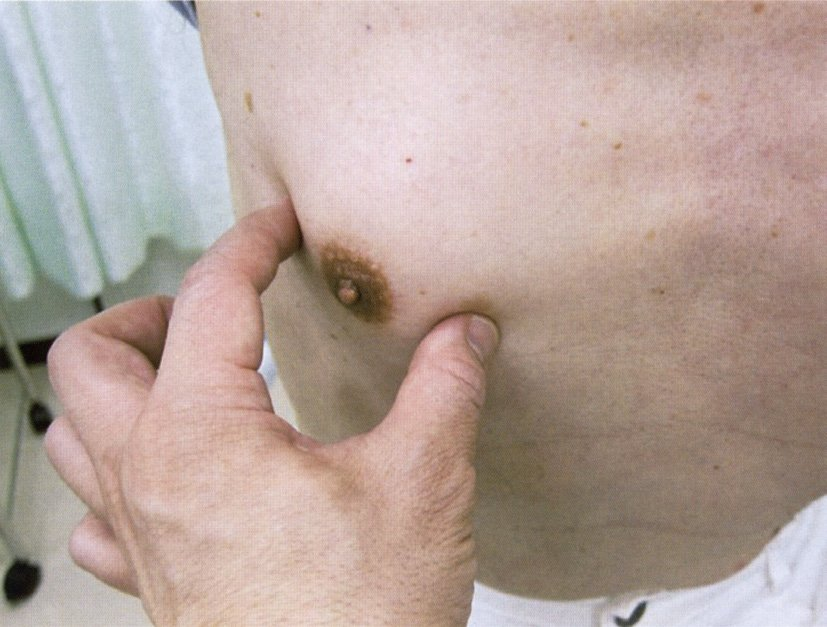
| 原因 | 機序 |
|---|---|
| 原因 | 機序 |
| 肝硬変 | エストロゲン代謝低下→蓄積 |
| スピロノラクトン | アンドロゲン受容体拮抗 |
| 抗男性ホルモン薬 | テストステロン↓→相対的エストロゲン↑ |
| 精巣腫瘍 | hCG産生or直接エストロゲン産生 |
| ドパミン拮抗薬 | PRL↑→乳腺刺激 |
| カルシウム拮抗薬（一部） | 軽度の女性化乳房をきたすことがある（弱い証拠） |
| カルシウム拮抗薬（一般） | 女性化乳房の主要原因ではない |
| 鑑別疾患 | 検査 | LH/FSH | PRL |
|---|---|---|---|
| 鑑別疾患 | 検査 | LH/FSH | PRL |
| 高プロラクチン血症 | プロラクチン測定 | ↓ | ↑ |
| 視床下部性無月経（機能性） | LH・FSH | ↓ | 正常 |
| 卵巣不全（POI） | FSH・LH | ↑ | 正常 |
| Sheehan症候群 | 総合的内分泌検査 | ↓ | ↓ |
| 甲状腺機能低下症 | TSH・FT4 | 正常 | 軽度↑ |
| 系統 | 合併症 |
|---|---|
| 系統 | 合併症 |
| 内分泌代謝 | 耐糖能異常・糖尿病（GH→インスリン拮抗） |
| 循環器 | 心肥大・高血圧・心不全 |
| 呼吸 | 睡眠時無呼吸症候群（SAS）（軟部組織肥大） |
| 整形 | 手根管症候群・関節症 |
| 悪性腫瘍 | 大腸癌（大腸ポリープ）リスク増加 |
| 視野 | 両耳側半盲（大腺腫） |
| 要素 | 内容 | 例 |
|---|---|---|
| 要素 | 内容 | 例 |
| システムレビュー（ROS） | 臓器系統の網羅的確認 | 「食欲・睡眠は？」 |
| 現病歴（HPI） | 主訴の詳細 | 「頭痛の性状は？」 |
| 既往歴 | 過去の疾患・手術 | 「以前大きな病気は？」 |
| 家族歴 | 血縁者の疾患 | 「ご家族に病気は？」 |
| 患者の疾病観 | 心配・期待 | 「どんな病気と思うか？」 |
| 順序 | ホルモン | 理由 |
|---|---|---|
| 順序 | ホルモン | 理由 |
| 第1位（最優先） | 副腎皮質ステロイド | コルチゾール欠乏は生命危機。先に補充しないと甲状腺ホルモン投与で副腎クリーゼ誘発 |
| 第2位 | 甲状腺ホルモン | 代謝活性化→副腎の負荷増大→コルチゾール欠乏時に危険 |
| 第3位以降 | 性ホルモン・GH・ADH | 生命維持には必須でないが生活の質のため |
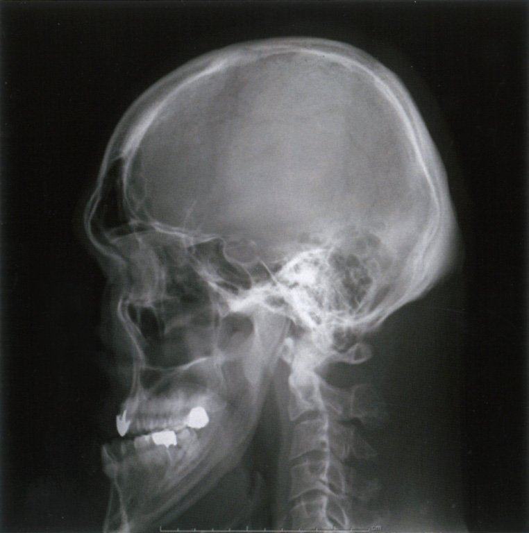
| 合併症 | 正誤 |
|---|---|
| 合併症 | 正誤 |
| 心肥大 | ○（みられる） |
| 耐糖能異常 | ○（みられる） |
| 低リン血症 | ×（みられない；高リン血症が正しい） |
| 睡眠時無呼吸 | ○（みられる） |
| 手根管症候群 | ○（みられる） |
| 高血圧 | ○（みられる） |
| 大腸癌（リスク増大） | ○（みられる） |
| 両耳側半盲（大腺腫） | ○（みられる） |
| 原因 | 機序 |
|---|---|
| 原因 | 機序 |
| 肝硬変 | エストロゲン代謝↓→蓄積 |
| 精巣腫瘍（胚細胞腫・セルトリ細胞腫） | hCG↑→アロマターゼ↑→E2産生 |
| ドパミン拮抗薬 | PRL↑→乳腺刺激 |
| 抗男性ホルモン薬 | テストステロン↓→相対的E過剰 |
| スピロノラクトン | アンドロゲン受容体拮抗 |
| 甲状腺機能亢進症 | SHBG↑→遊離テストステロン↓ |
| 尿崩症 | 女性化乳房の原因ではない |
| ACTH欠損症 | 直接的な原因ではない |
| ホルモン | 食後の変化 | 機序 |
|---|---|---|
| ホルモン | 食後の変化 | 機序 |
| GH | ↓ | インスリン↑・血糖↑→GH分泌抑制 |
| インスリン | ↑ | 血糖↑→膵β細胞刺激 |
| グルカゴン | ↓ | 血糖↑→膵α細胞抑制 |
| GLP-1 | ↑ | 腸管L細胞からの分泌↑（食事刺激） |
| GIP | ↑ | 腸管K細胞からの分泌↑ |
| FT4 | 変化なし | 食事の影響は少ない |
| 検査 | 所見 | 機序 |
|---|---|---|
| 検査 | 所見 | 機序 |
| GH | ↑（高値） | IGF-I↓→フィードバック低下→GH↑ |
| IGF-I（ソマトメジンC） | ↓ | 低栄養→肝臓でのIGF-I産生↓ |
| LH・FSH | ↓ | GnRHパルス↓→性腺軸抑制→無月経 |
| コルチゾール | ↑ | 低栄養ストレス→HPA軸活性化 |
| FT3（T3） | ↓（低T3症候群） | Sick euthyroid：T4→T3変換↓ |
| アルドステロン | 正常〜↑ | 体液量減少への代償 |
| 成長ホルモン結合タンパク（GHBP） | ↓ | 受容体発現↓ |
| 所見 | AN | BN |
|---|---|---|
| 所見 | AN（やせ症） | BN（過食症） |
| 体温 | 低体温 | 正常 |
| 脈拍 | 徐脈 | 正常 |
| 血圧 | 低血圧 | 正常〜やや低 |
| 電解質 | 比較的正常 | 低K・代謝性アルカローシス |
| 月経 | 無月経 | 比較的維持 |
| 体重 | 低体重 | 正常〜軽度肥満 |
| 嘔吐 | 少（制限型） | 自己誘発嘔吐が多い |
| 優先度 | ホルモン | 理由 |
|---|---|---|
| 優先度 | ホルモン | 理由 |
| 第1位 | 副腎皮質ステロイド（コルチゾール） | コルチゾール欠乏は生命危機。先行補充必須 |
| 第2位 | 甲状腺ホルモン | ステロイド補充後に開始（逆順は副腎クリーゼ誘発） |
| 第3位以降 | 性ホルモン・GH | 生命には直結しないが生活の質のため |
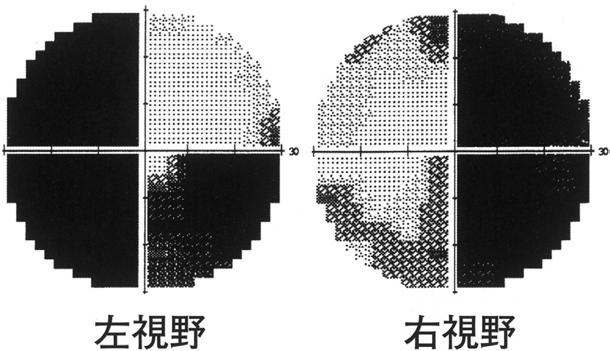
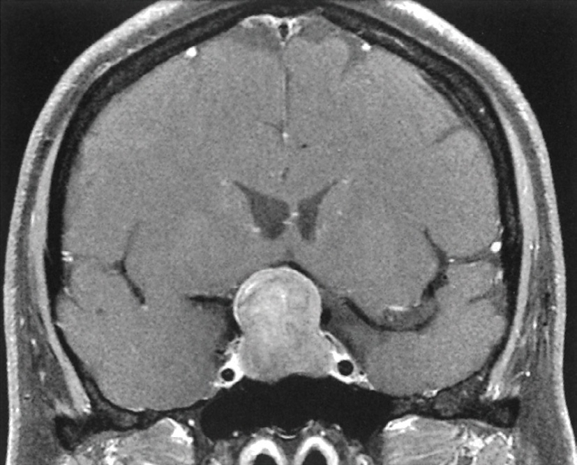
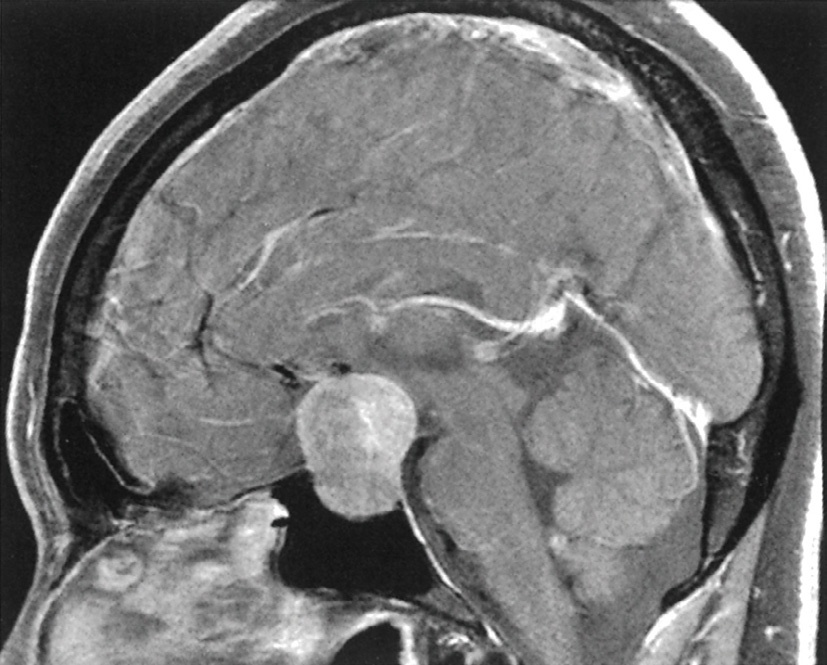
| 合併症 | 正誤 |
|---|---|
| 合併症 | 正誤 |
| 大腸癌 | ○（リスク増大） |
| 高血圧症 | ○ |
| 虚血性心疾患・心肥大 | ○ |
| 睡眠時無呼吸（SAS） | ○ |
| 手根管症候群 | ○ |
| 耐糖能異常・糖尿病 | ○ |
| 縦隔腫瘍 | ×（関連なし） |
| 疾患 | 主な症候 |
|---|---|
| 疾患 | 主な症候 |
| 先端巨大症 | 末端肥大・SAS・糖尿病・心肥大・大腸癌 |
| 中枢性尿崩症 | 高張性脱水（高Na）・多尿・口渇 |
| Sheehan症候群 | 乳汁なし（PRL↓）・無月経・陰毛脱落 |
| Cushing病 | 中心性肥満・筋力低下・皮膚線条・高血圧・糖尿病 |
| プロラクチノーマ | 無月経・乳汁漏出・不妊・頭痛・視野障害 |
| 死亡原因 | 詳細 |
|---|---|
| 死亡原因 | 詳細 |
| 心不全・不整脈 | 低K血症による→QT延長→心室細動 |
| 低血糖 | コルチゾール↑でも低栄養で低血糖→意識障害 |
| 自殺 | うつ合併・絶望感 |
| 感染症 | 免疫低下→敗血症 |
| 分類 | 原因 |
|---|---|
| 分類 | 原因 |
| 腫瘍性 | プロラクチノーマ（最多） |
| 薬剤性 | D2拮抗薬（メトクロプラミド・スルピリド・ハロペリドール・リスペリドン） |
| 内分泌疾患 | 甲状腺機能低下症（TRH↑→PRL↑） |
| 生理的 | 妊娠・授乳・睡眠・ストレス |
| その他 | 視床下部障害・腎不全 |
| 甲状腺機能亢進症 | ×（高PRL血症の原因ではない） |
| 疾患 | 電解質 | 正誤 |
|---|---|---|
| 疾患 | 電解質 | 正誤 |
| 成人T細胞白血病 | 高Ca血症 | ○（PTHrP産生→破骨細胞活性化） |
| 偽性Bartter症候群 | 低K血症 | ○（嘔吐・下剤乱用でK喪失） |
| 下垂体前葉機能低下症 | 高K血症 | ×（アルドステロンは保たれるため） |
| 偽性副甲状腺機能低下症 | 低Ca血症 | ○（PTH抵抗性→Ca↓） |
| SIADH | 低Na血症 | ○（ADH過剰→水貯留→希釈性低Na） |
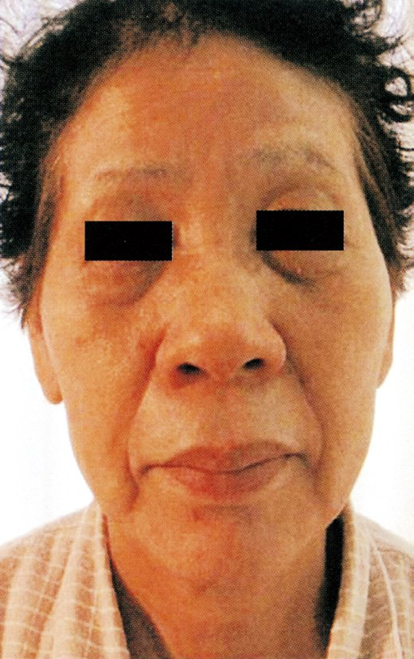
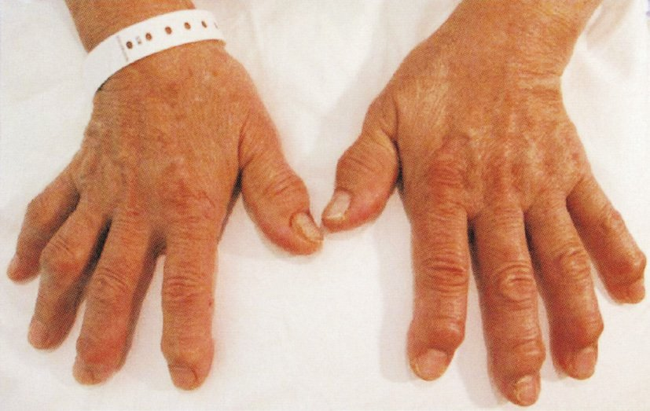
| 疾患 | 薬物療法効果 | 治療 |
|---|---|---|
| 疾患 | 薬物療法効果 | 治療 |
| Kallmann症候群 | あり（GnRH/ゴナドトロピン） | GnRHポンプ・FSH+hCG補充 |
| 精索静脈瘤 | なし（薬物） | 手術（精索静脈瘤切除） |
| ムンプス精巣炎 | なし | 支持療法のみ |
| Klinefelter症候群 | なし（根本） | 精子採取（TESE）+ICSI |
| 先天性両側精管欠損症 | なし | TESE+ICSI（精管は再建不可） |
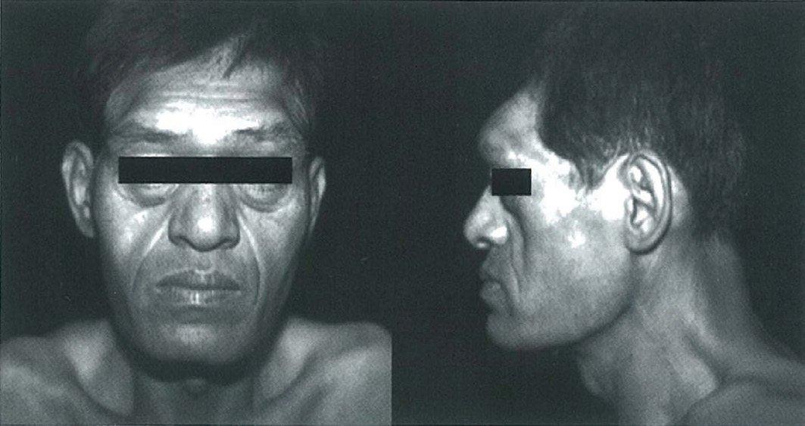
| 合併症 | 機序 |
|---|---|
| 合併症 | 機序 |
| 代謝性アルカローシス | 嘔吐→HCl喪失→HCO₃⁻相対的過剰 |
| 低K血症（低カリウム） | 代謝性アルカローシス→腎でK⁺排泄↑ |
| 低Cl血症 | HCl喪失による |
| 虫歯・歯のエナメル腐食 | 嘔吐による胃酸の歯への暴露 |
| 耳下腺腫大 | 反復嘔吐による機械的刺激 |
| 低K→QT延長 | 致死的不整脈のリスク |
| 欠損ホルモン | 症候 |
|---|---|
| 欠損ホルモン | 症候 |
| ACTH↓→コルチゾール↓ | 低血糖・低血圧・倦怠感 |
| TSH↓→甲状腺ホルモン↓ | 無気力・便秘・寒がり・高コレステロール |
| LH・FSH↓→性ステロイド↓ | 無月経・陰毛・腋毛脱落・性欲低下 |
| PRL↓ | 授乳不能（乳汁分泌なし）←最重要 |
| GH↓ | 筋力低下・脂質異常 |
| 検査 | 所見 | 機序 |
|---|---|---|
| 検査 | 所見 | 機序 |
| 脈拍 | 徐脈 | 代謝低下・迷走神経優位 |
| アルブミン | ↓（低アルブミン血症） | 低栄養→肝産生↓ |
| Hb（貧血） | 低値 | 鉄欠乏・骨髄抑制 |
| LH・FSH | ↓（低値） | GnRHパルス↓→性腺軸抑制 |
| T3（FT3） | ↓（低値） | Sick euthyroid：T4→T3変換↓ |
| GH | ↑（高値） | IGF-I↓→フィードバック低下→GH↑ |
| コルチゾール | ↑ | 低栄養ストレス→HPA軸活性化 |
| 疾患 | 身長 | 性腺 | 特徴 |
|---|---|---|---|
| 疾患 | 身長 | 性腺 | 特徴 |
| Prader-Willi症候群 | 低身長 | 性腺機能低下 | 肥満・筋緊張低下・知的障害 |
| Turner症候群 | 低身長 | 原発性卵巣不全（FSH↑） | 45,X・翼状頸・蹄鉄腎 |
| Klinefelter症候群 | 高身長 | 性腺機能低下（FSH↑） | 47,XXY・女性化乳房 |
| Marfan症候群 | 高身長 | 正常 | FBN1変異・大動脈解離 |
| Cushing症候群 | 低身長（二次性） | 二次性低下 | ステロイド過剰・肥満 |
| McCune-Albright | 様々 | 性的早熟 | 多骨性線維性骨異形成 |
| 分類 | 原因 | 特徴 |
|---|---|---|
| 分類 | 原因 | 特徴 |
| 視床下部性 | やせ・過度の運動・ストレス | LH/FSH↓・PRL正常 |
| 下垂体性 | Sheehan・プロラクチノーマ・腫瘍 | LH/FSH↓・PRL↑or↓ |
| 卵巣性 | Turner・早発卵巣不全 | LH/FSH↑・エストロゲン↓ |
| 子宮性 | Asherman症候群・子宮奇形 | ホルモン正常 |
| 薬剤 | 分類 | 作用 |
|---|---|---|
| 薬剤 | 分類 | 作用 |
| オクトレオチド・ランレオチド | ソマトスタチンアナログ | GH分泌↓・腫瘍縮小 |
| ペグビソマント | GH受容体拮抗薬 | IGF-I低下（GH自体は変わらない） |
| カベルゴリン | ドパミン作動薬 | GH腫瘍への効果は限定的 |
| 経蝶形骨洞手術 | 外科的治療 | 第一選択（根治目的） |
| 放射線治療 | 物理的治療 | 手術後残存腫瘍に |
| 症候群 | 特徴 |
|---|---|
| 症候群 | 特徴 |
| Chiari-Frommel症候群 | 分娩後に持続する高PRL血症・無月経・授乳なしでも乳汁分泌 |
| Forbes-Albright症候群 | 非産褥性の高PRL血症・無月経（腫瘍性） |
| Sheehan症候群 | PRL↓（授乳不能）→無月経乳漏症候群ではない |
| Kallmann症候群 | PRL正常（GnRH欠損が主） |
| Laurence-Moon-Biedl | 視網膜色素変性・肥満・多指（PRLとは無関係） |
| 心理的要因 | 内容 |
|---|---|
| 心理的要因 | 内容 |
| ボディイメージの歪み | 客観的には痩せているのに「太っている」と認識 |
| 成熟への拒否 | 思春期の身体変化・大人になることへの恐怖 |
| 完璧主義 | 高い目標設定・失敗への極度の恐れ |
| 家族内葛藤 | 母娘関係・兄弟間競争・家族の期待への応答 |
| 性同一性の葛藤 | ANの主要心理的背景ではない |
| 症候群 | PRL | 特徴的所見 |
|---|---|---|
| 症候群 | PRL | 特徴的所見 |
| Chiari-Frommel | ↑（高値） | 産後遷延性高PRL・無月経・乳汁分泌 |
| Forbes-Albright | ↑（高値） | 非産褥性・プロラクチノーマが多い |
| Sheehan | ↓（低値） | 産後授乳不能・無月経・陰毛脱落 |
| Kallmann | 正常 | 嗅覚低下＋性腺機能低下（GnRH欠損） |
| Laurence-Moon-Biedl | 正常 | 視網膜色素変性・多指・肥満 |
| McCune-Albright | 正常 | 多骨性線維性骨異形成・性的早熟 |
| 合併症 | 肥満との関係 |
| 2型糖尿病・耐糖能異常 | 内臓脂肪→インスリン抵抗性 |
| 脂質異常症 | トリグリセリド↑・HDL↓ |
| 高血圧 | 循環血液量↑・交感神経活性↑ |
| 高尿酸血症 | 尿酸産生↑・排泄↓ |
| 変形性膝・股関節症 | 関節への過負荷 |
| Pickwick症候群（肥満低換気症候群） | 横隔膜挙上→換気障害 |
| 睡眠時無呼吸症候群 | 咽頭脂肪沈着→上気道狭窄 |
| 高プロラクチン血症 | 肥満の合併症ではない |
| 合併症 | 機序 | 正誤 |
|---|---|---|
| 合併症 | 機序 | 正誤 |
| 高血圧 | Na貯留・心収縮↑ | ○ |
| 糖尿病・耐糖能異常 | インスリン拮抗↑ | ○ |
| 尿路結石 | IGF-I↑→Ca吸収↑→高Ca尿 | ○ |
| 低リン血症 | GH→リン再吸収↑→高リン血症 | ×（みられない） |
| 変形性膝関節症 | 関節軟骨・骨の変形 | ○ |
| 大腸癌 | GH→大腸粘膜増殖 | ○ |
| SAS（睡眠時無呼吸） | 軟部組織肥大→上気道閉塞 | ○ |
| 心肥大 | GH・IGF-Iの心筋への直接作用 | ○ |